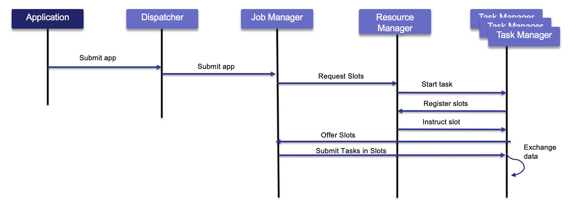
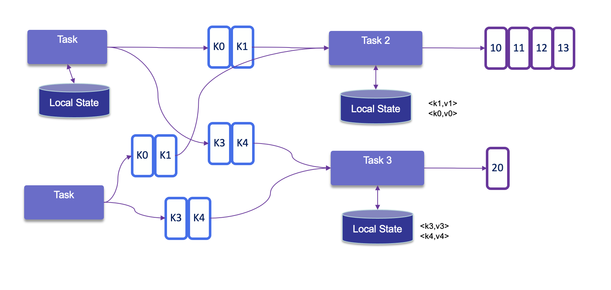
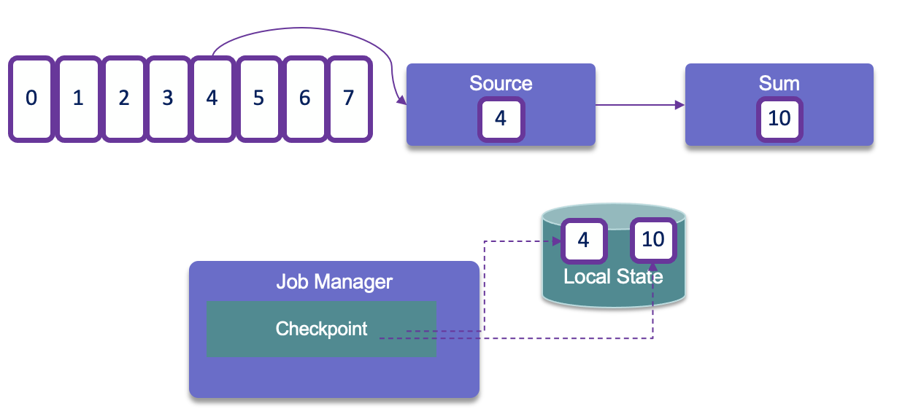
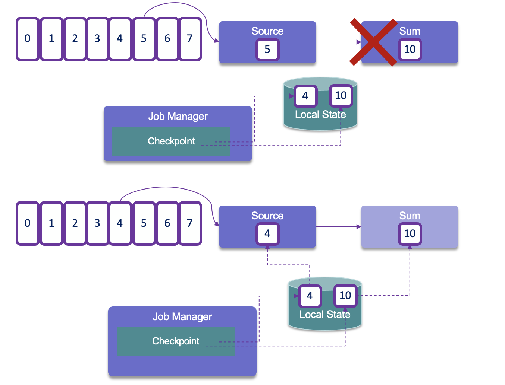

Flink architecture
Flink consists of a Job Manager and n Task Managers.
The JobManager controls the execution of a single application. It receives an application for execution and builds a Task Execution Graph from the defined Job Graph. It manages job submission and the job lifecycle then allocates work to Task Managers The Resource Manager manages Task Slots and leverages underlying orchestrator, like Kubernetes or Yarn. A Task slot is the unit of work executed on CPU. The Task Managers execute the actual stream processing logic. There are multiple task managers running in a cluster. The number of slots limits the number of tasks a TaskManager can execute. After it has been started, a TaskManager registers its slots to the ResourceManager

The Disparcher exposes API to submit applications for execution. It hosts the user interface too.
Only one Job Manager is active at a given point of time, and there may be n Task Managers.
There are different deployment models:
- Deploy on executing cluster, this is the session mode. Use session cluster to run multiple jobs: we need a JobManager container.
- Per job mode, spin up a cluster per job submission. More k8s oriented. This provides better resource isolation.
- Application mode creates a cluster per app with the main() function executed on the JobManager. It can include multiple jobs but they run inside the app. It allows for saving the required CPU cycles, but also save the bandwidth required for downloading the dependencies locally.
Flink can run on any common resource manager like Hadoop Yarn, Mesos, or Kubernetes. For development purpose, we can use docker images to deploy a Session or Job cluster.
See also deployment to Kubernetes
! add screen shot of k8s deployment
Batch processing
Process all the data in one job with bounded dataset. It is used when we need all the data for assessing trend, develop AI model, and with a focus on throughput instead of latency.
Hadoop was designed to do batch processing. Flink has capability to replace Hadoop map reduce processing.
High Availability
With Task managers running in parallel, if one fails the number of available slots drops by the JobManager asks the Resource Manager to get new processing slots. The application's restart strategy determines how often the JobManager restarts the application and how long it waits between restarts.
Flink uses Zookeeper to manage multiple JobManagers and select the leader to control the execution of the streaming application. Application's tasks checkpoints and other states are saved in a remote storage, but metadata are saved in Zookeeper. When a JobManager fails, all tasks that belong to its application are automatically cancelled. A new JobManager that takes over the work by getting information of the storage from Zookeeper, and then restarts the process with the JobManager.
State management
- All data maintained by a task and used to compute the results of a function belong to the state of the task.
- While processing the data, the task can read and update its state and compute its result based on its input data and state.
- State management includes address very large states, and no state is lost in case of failures.
- Each operator needs to register its state.
- Operator State is scoped to an operator task: all records processed by the same parallel task have access to the same state
- Keyed state is maintained and accessed with respect to a key defined in the records of an operator’s input stream. Flink maintains one state instance per key value and Flink partitions all records with the same key to the operator task that maintains the state for this key. The key-value map is sharded across all parallel tasks:

- Each task maintains its state locally to improve latency. For small state, the state backends will use JVM heap, but for larger state RocksDB is used. A state backend takes care of checkpointing the state of a task to a remote and persistent storage.
- With stateful distributed processing, scaling stateful operators, enforces state repartitioning and assigning to more or fewer parallel tasks. Keys are organized in key-groups, and key groups are assigned to tasks. Operators with operator list state are scaled by redistributing the list entries. Operators with operator union list state are scaled by broadcasting the full list of state entries to each task.
Flink uses Checkpointing to periodically store the state of the various stream processing operators on durable storage.

When recovering from a failure, the stream processing job can resume from the latest checkpoint.

Checkpointing is coordinated by the Job Manager, it knows the location of the latest completed checkpoint which will get important later on. This checkpointing and recovery mechanism can provide exactly-once consistency for application state, given that all operators checkpoint and restore all of their states and that all input streams are reset to the position up to which they were consumed when the checkpoint was taken. This will work perfectly with Kafka, but not with sockets or queues where messages are lost once consumed. Therefore exactly-once state consistency can be ensured only if all input streams are from resettable data sources.
During the recovery and depending on the sink operators of an application, some result records might be emitted multiple times to downstream systems.